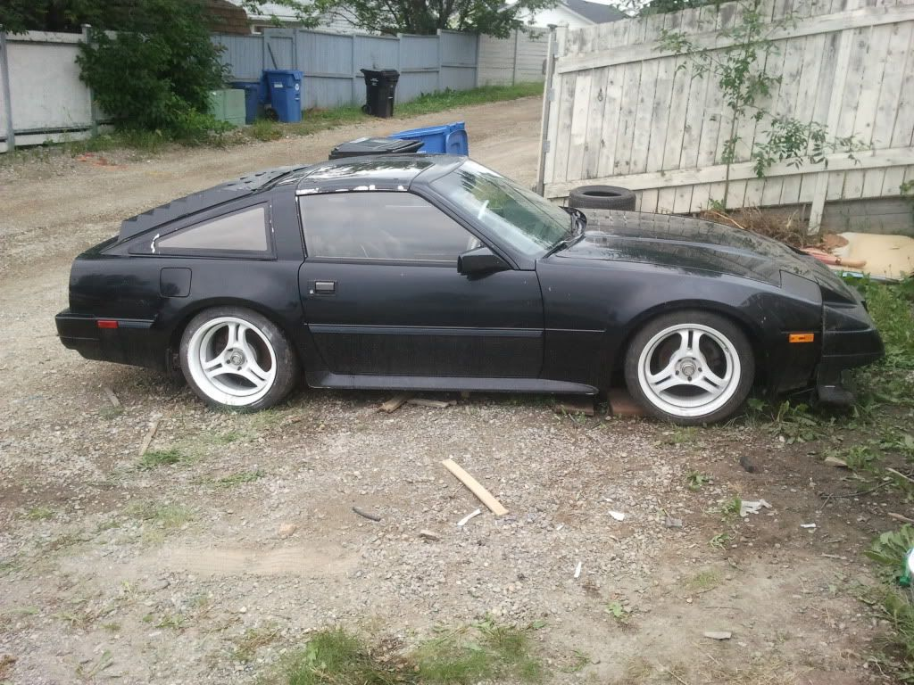

-
Does anybody have a suggestion as to where I could buy a set of the aluminum louvers?
Any idea how much to they weight? Do you think I could remove my rear window glass and mount the louver in its place? Thereby reducing the weight of the car (for autocross)?My ride: 1984 300ZXT Anniversary Edition, SCCA BSP
See: http://z31performance.com/showthread…ight=vegasz31t -
eBay .. Or…vegasZ31T wrote: Does anybody have a suggestion as to where I could buy a set of the aluminum louvers?
Any idea how much to they weight? Do you think I could remove my rear window glass and mount the louver in its place? Thereby reducing the weight of the car (for autocross)?
http://www.andysautosport.com/nissan/19 … a_hammond/ -
Thanks for the rear louver link. Up until now I just haven't been able to find a brand name or a vendor.
Just added: Now I can find all kinds of louvers, thanks.My ride: 1984 300ZXT Anniversary Edition, SCCA BSP
See: http://z31performance.com/showthread…ight=vegasz31t -
Digging this up a bit ....
Trying to locate louvers for my 85 2+2
All I can seem to find is the 2 seater 84-86 or 2 seater 87-89
I also found for 2+2 from 84-89
Is that right? Is it the same for zenki and kouki 2+2 models?http://z31performance.com/showthread…2-2-(-now-NA2T
My build thread (: -
The louvres are different for zenki and kouki as kouki has the third brake light. The kouki louvres look better imo. All year 2+2 hatches are the same, and all coupe hatches are the same except 86 as it has holes for the brake light.
http://www.300zxpartsforyou.com/ has louvres for 84-86 2+2 for $250 (want so bad… for my '86 2+2-T)1986 300ZX factory Turbo 2+2 5 speed swap. 1985 Toyota MR2. Floor boards gone. Good fabrication practice.

-
Here are a picture of mine, before I repainted them black.
-
here are the louvers i picked up.
they came off an 87 2+0 na at picknpull. although i am sure they are for an 84-86


someone on the FB z31p said they were interpart, but from what i have seen they dont look the same (the edge isnt one uniform flat peice)
-
I want you wheels.... -
Those are "CHASTAIN" louvers … the "original" louvers .. It looks like the lower edge / locking pieces are missing or removed?slammedcoupe;343125 wrote: here are the louvers i picked up.
they came off an 87 2+0 na at picknpull. although i am sure they are for an 84-86
someone on the FB z31p said they were interpart, but from what i have seen they dont look the same (the edge isnt one uniform flat peice) -
I have the locking tabs, but they are in the shop for a rework.
is the lower edge supposed to have the locking tabs on it? as mine are on 2 separate pieces of aluminum -
mine?Greasedmonkey;343235 wrote: I want you wheels.... -
Yes, locking on the outer edges of the bottom louvers. It looks like they updated the design. Mine has a single support bar (down the middle) .. yours appears to have 2 support bars spaced equi-distant apart.
-
This is the mounting tab for the lower edge .. one on each side.
-
ahh ok, mine have a "key" and have a little tab that slides out to lock them. ill see if i can get a pic later today! -
Mine "had" a key as well. Instead of a tab that slides out .. mine used a SOUTHCO pushdown/qtr turn dzus-type fastner. I'll post a pic of the key later as well. Basically the locking mechanism wore out and I could not find replacements. Chastain is no longer in business. So I'm using a machine screw/bolt setup that I painted black to match the louvre.slammedcoupe;343510 wrote: ahh ok, mine have a "key" and have a little tab that slides out to lock them. ill see if i can get a pic later today!
I have a thread elsewhere "here" .. search SOUTHCO for a pic.


Copyright © 2006–. All rights reserved. Privacy Policy